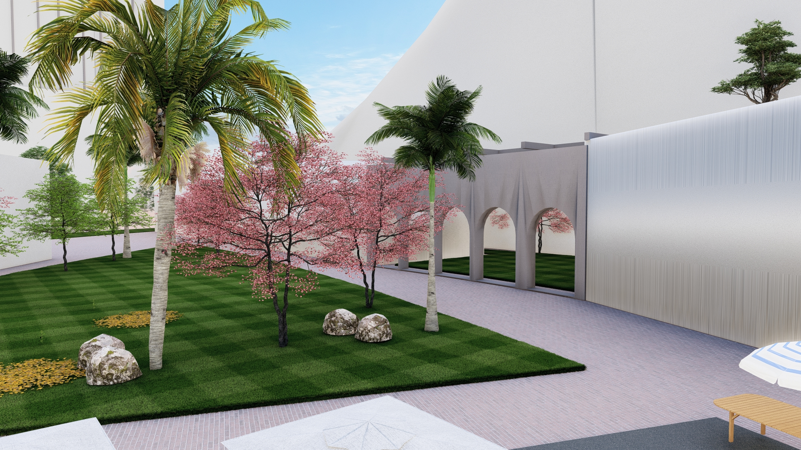
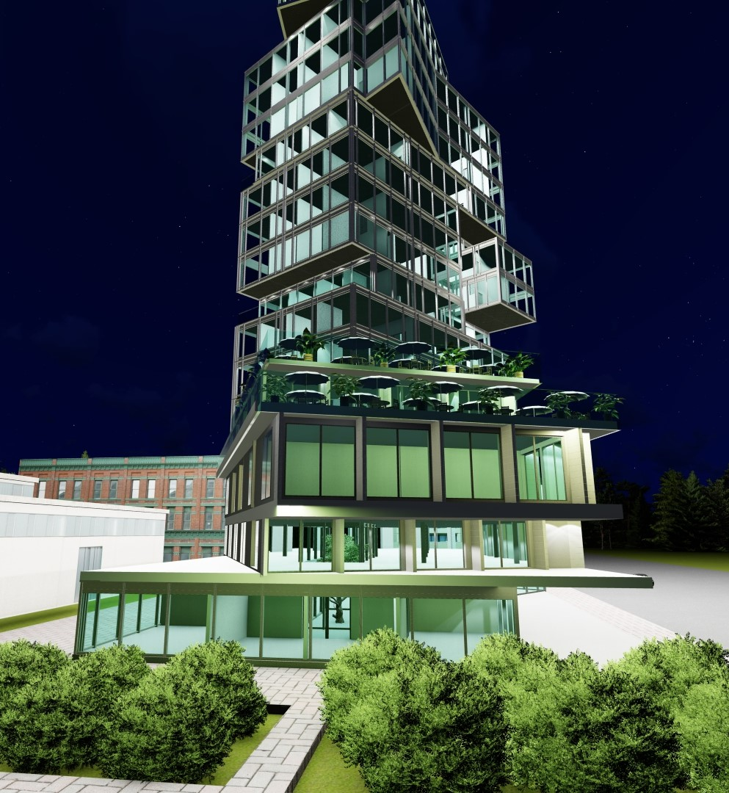

01
Execution Discipline
Design intent, budget logic, procurement, and site activity are treated as one delivery chain rather than separate silos.
The public-facing story is now tighter and cleaner. It focuses on how the company works and what it delivers, not on bloated credential language or decorative branding.
Cordon Blue Global Services Ltd supports commercial, industrial, hospitality, and infrastructure projects across Nigeria. The company operates as a coordinated delivery partner, bringing architecture, engineering, project management, and site execution into one practical structure.
That structure matters. Many companies present a long capability list but work in fragments. Cordon Blue is stronger when it operates as one delivery chain with clear reporting, tighter handoffs, and fewer blind spots between design decisions and what happens on site.
The updated website language reflects that directly. It removes unnecessary corporate-detail clutter and lets the work, project range, and operating discipline do the convincing.

Design intent, budget logic, procurement, and site activity are treated as one delivery chain rather than separate silos.
Concept decisions are judged against cost, sequencing, material reality, and field execution, not just presentation value.
Progress, scope, and commercial issues need to stay visible. Hidden friction usually becomes site delay later.
